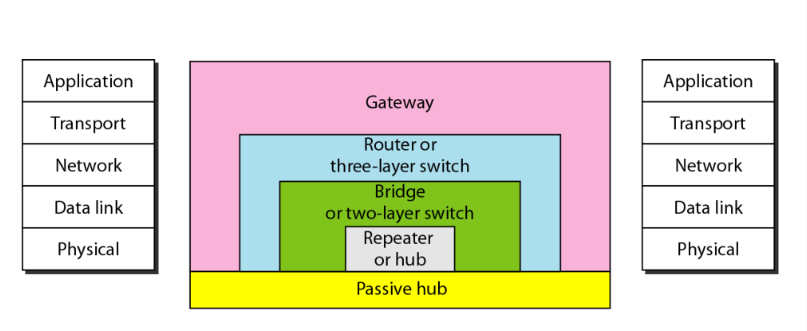
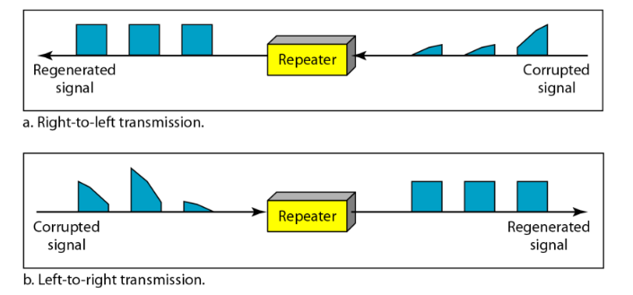
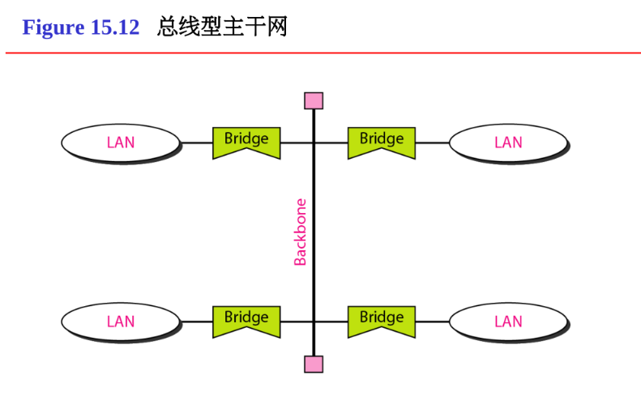

计算机通信与网络 - 2
数据链路控制
链路是一条婺源的点到点的物理线路段。数据链路则是在链路上加上实现通信协议以控制数据传输的软件或硬件。
成帧
数据链路层需要将一组比特位组成帧，以便帧和帧之间是可以识别的。
面向字符协议
该协议将帧看作是由特定字符集组成的字符串。使用特殊的“控制字符来界定帧的开始和结束，并管理通信过程。
一个典型的帧结构如下：
| SYN | SYN | SOH | 报头 | STX | 数据字段 | ETX | 块校验 |
其中，SYN 表示建立和维持收发双方的时钟同步，SOH 表示帧的爆头部分开始，STX 表示帧的数据部分开始，ETX 表示帧的数据部分结束，块校验用于错误检测。
该设计的优点在于设计简单，但是和机器的字符编码强绑定，兼容性差，且效率较低。
面向位协议
该协议不再关心字符的边界，而是将帧视为纯粹的比特流。使用标志序列来标记帧的开始和结束。常用于 HDLC、PPP、LLC 等协议中。
以 HDLC 为例
| 标志 F | 地址 A | 控制 C | 数据 Info | 帧校验 FCS | 标志 F |
| 8 bits | 8 bits | 8 bits | 数据长度 | 16/32 bits | 8 bits |
其中，标志字段为固定的比特序列 01111110 (0x7E)，用于表示帧的开始和结束。为了防止在数据字段中不会出现和 01111110 相同的比特模式，每当在其他地方出现连续5个 1 后，就自动插入一个 0。接收方在发现有5个 1 后，检查下一位，若为 0 则删除这个 0，若为 1 则检查下一位，为 0 则是帧结束表示，为 1 则可能是错误或中止信号。
数据链路控制
数据链路控制分为流量控制和差错控制。流量控制就是通过一系列过程，用来限制发送方在等到确认前发送的数据数量。数据链路层的差错控制基于自动重复请求，即重传数据。
由收方控制发方是数据流，是计算机网络中流量控制的一个基本方法。
在接收结点中，收到发送节点发来的数据帧后，将其放入数据链路层的接收缓存。将接收缓存中的数据帧上交主机，同时向发送节点发送信息 ACK ，表示数据帧已经上交给主机，若上交失败则发送信息 NAK。而发送节点发送完一个数据帧时，就启动一个超时计时器，若到了超时计时器所设置的重传时间 $t_{\text{out}}$ 而仍然收不到接收方的任何确认帧时，则发送方就会重传前面发送的这一数据帧。
重传的方式则和自动重传协议 (ARQ) 的不同有关。常用的 ARQ 有三种。
停等 ARQ
这是最简单的一种 ARQ 协议。发送方发送一帧后，就停止并等待接收方的确认应答。只有收到接收方的 ACK 后才发送下一帧。当然，接收方可能会收到重复的帧，因此帧中需要包含序列号。序列号通常只需要1比特，0和1交替即可。该协议简单，但效率极低。适用于信道质量好的环境。
后退 N 帧 ARQ
克服了停等 ARQ 的效率问题的一种协议。该 ARQ 在允许发送方在不等待确认的情况下，连续发送多个帧。发送方维护一个发送窗口。位于窗口内的帧可以连续发送出去，而无需等待确认。接收方采用累计确认的形式，即它返回一个序列号为
n的 ACK，表示它已经正确收到了包括n在内的所有以前的帧。如果发送方发现某个帧，比如第n号帧，的计时器超时了，那么它就回退到第n帧，并重新发送从该帧后的所有连续帧，即使某些后续帧已经被接收方正确收到了。此协议中序列号是模 $2^m$，其中 $m$ 是序列号字段长度。虽然效率提高了，也允许管道化发送，但可能会导致大量帧被重传，浪费了带宽。
选择重发 ARQ
接收方会逐个确认每一个正确收到的帧。当发送方发现某帧超时未确认时，它只重传那一帧。该方法效率最高，但实现最复杂。适用于信道质量差或延迟高的环境。
发送窗口是一个抽象概念，和滑动窗口类似。通过三个变量 $S_f$、$S_n$ 和 $S_{size}$ 来定义其大小。当 ACK 消息到达时，发送窗口滑动一个或多个帧时隙。其中的 $S_{size}<2^m$，一般取 $2^m-1$。
协议
高级数据链路控制协议
HDLC (High-level Data Link Control) 是一个实际应用的面向比特的数据链路协议。其帧样式参考上面的例子。
HDLC 中的帧可以分为三种
- 信息帧，数据中存放用户信息
- 管理帧，数据中传输控制信息
- 无符号帧，系统管理，管理链路自身
PPP 协议
用户拿电话线接入因特网时，一般都是使用 PPP 协议。
该协议相比HDLC 协议的帧，在 C 和 Info 中多了2字节的协议部分，而前面的 F、A、C 部分均为1字节。
多路访问
随机访问协议
没有一个站点是优于其他站点的，也不能控制其他站点。站点之间的发送是随机的。
纯 ALOHA
这是最早的一种形式。即想发就发。任何站点有数据帧需要发送时，可以立即发送。该协议的效率非常低。
纯 ALOHA 的吞吐量是 $S=G\times e^{-2G}$，其中 $G$ 是一个帧传输时间内系统产生的帧平均数量，当 $G=\frac{1}{2}$ 时，最大吞吐量为 $S_{max}=0.184$。
时隙 ALOHA
纯 ALOHA 的改进版，在约定的时间点中想发就发。将时间划分为等长的时隙，站点在每个时隙的开始时才能发送帧。但是，如果一个时隙内有两个以上的帧要发送，他们就会完全重叠，导致冲突。
时隙 ALOHA 的吞吐量是 $S=G\times e^{-G}$，当 $G=1$ 时，最大吞吐量为 $S_{max}=0.368$。
CSMA
在 ALOHA 的基础上增加了一个“先听后说”的步骤。在发送前，如果信道空闲，就发送整个帧，如果信道繁忙，就根据不同的策略进行处理。
- 1-坚持 CSMA：持续侦听，一旦发现空闲，立即以概率1发送，容易产生冲突
- 非坚持 CSMA：等待一个随机时间后重新侦听，减少冲突但增加了延迟
- P-坚持 CSMA：侦听到空闲时以概率 P 发送，是前两者的折中
其实就是类似互斥锁的操作，但原子性不太强。
CSMA/CD
传统的有线以太网使用的协议。增加了“边说边听”的步骤。
发送时，站点持续侦听信道（总线）。发送前先侦听。发送过程中通过比较发送的信号和接收到的信号，检测是否发生了冲突。一旦检测到冲突，立即停止发送当前帧，并发送一个干扰信号，以确保所有站点都直到发生了冲突。等待一个随机时间后，重新尝试发送。
使用该协议的以太网不能进行全双工通信而只能进行半双工通信。
graph TD
b1[准备发送]
b2[载波监听，检测信道]
j1{侦听到载波？}
b3[96 bit 时间内仍然空闲，开始发送，同时进行碰撞检测]
j2{检测到碰撞？}
b4[发送，直到完毕]
b5[停止发送数据]
b6[发送人为干扰信号]
b7[等待随机时间，阶段二进制指数算法]
b1-->b2-->j1-->|否|b3-->j2-->|否|b4
j1-->|是，信道忙|b1
j2-->|是，发送失败|b5-->b6-->b7-->b1
CSMA/CA
为无线局域网设计的协议。由于无线局域网中干扰信号不可能全部都发送到。
发送前先侦听。然后使用 RTS/CTS （请求发送/清除发送）帧。发送方先向接收方发送一个很小的 RTS 帧，接收方若准备号接收，就广播一个 CTS 帧。这个 CTS 会告知发送方和发送方周围的所有站点，从而达到预约信道的功能。即使侦听到信号空闲，站点也必须等待一个特定的帧间间隔 IFS (DIFS 或 SIFS) 后才能行动。优先级高的帧（如 ACK）等待时间短，数据帧等待时间长。
受控访问协议
站点不呢个随意发送数据，必须受到一个中心控制器或一个特定规则的约束，才能获得发送权限。
预约协议
将信道时间划分为一个个清晰的周期，每个周期分为预约阶段和数据传输阶段。站点在发送数据前需要预约，即在数据帧前发送一个预约帧。适用于流量稳定、连续的应用（如语音、视频流）。
轮询协议
网络中有一个主站，它按照一个特定顺序逐个询问所有从站是否有数据要发送。该方法实现简单，但开销很大。
令牌传递协议
令牌在网络中从一个站点到下一个站点顺序传递，拿到令牌的站点发送一个数据帧。数据帧和令牌一起在环上传输，被所有站点看到，但只有目的站点会复制它。该方法无冲突，高效率，但令牌维护开销大。
链接局域网、主干网和虚拟局域网
局域网间的链接
LAN 即局域网，链接局域网的设备有许多种。
根据连接设备在网络中的工作层次，可以将连接设备分为五类：无源集线器 Passive Hubs、有源集线器 Active Hubs 或中继器 Repeater、网桥 Bridges 或二层交换机 Two-Layer Switches、路由器 Routers 或三层交换机 Three Layer Switches、网关 Gateways。

中继器作用于物理层，用于信号放大和再生。中继器转发每一帧，但没有过滤能力。

无源集线器也作用于物理层，可以看作一个“多端口中继器”，它从一个端口收到电信号后，不做任何处理，直接向所欲其他端口广播这个信号。在现代网络中已经被交换机完全取代。

网桥作用于数据链路层。用于隔离冲突域，基于 MAC 地址进行转发。它能识别数据帧中的 MAC 地址，并且将每个端口链接了哪些 MAC 地址记录下来。
当收到一个数据帧时，网桥会直接查看目标 MAC 地址。若目标设备在同一端口，则不转发，直接丢弃；若目标设备在另一个端口，则只将该帧转发到那个特定的端口；若不知道目标设备在哪里，则进行泛洪 （向所有其他端口广播）。
网桥不改变帧中的 MAC 地址。
而交换机 (Switch) 则是集线器和网桥的升级版。他继承了网桥基于 MAC 地址转发，隔离冲突域的特点，并且每个端口都是一个独立的冲突域，这意味着连接在交换机上的每台设备都可以独享带宽，实现全双工通信。心昂党羽一个邮局分拣中心。
而网关则是传输层到应用层的操作，用于协议转换。
主干网
还可以利用主干网还链接多个局域网。


虚拟局域网 VLAN
虚拟局域网是由一些局域网网段构成的和物理位置无关的逻辑组。虚拟局域网其实只是局域网给用户提供的一种服务，而并不是一种新型局域网。
虚拟局域网协议允许在以太网的帧格式中插入一字节的标识符，称为 VLAN 标记，用来指明发送该帧的工作站属于哪一个虚拟局域网。
VLAN 创建广播域，将属于一个或多个物理 LAN 的站点分组到广播域。
网络层
IPv4
IPv4 是一个 32-bit 地址，它唯一地和通用地定义了一个链接在因特网上的设备。其地址空间为 $2^{32}$ 个。
而子网掩码用于标识子网。通常在 IP 地址后面加数字 （如192.168.1.1/24）表示子网掩码中从左边开始连续为1的数。标识子网时，使用子网掩码和 IP 地址进行按位与运算，得到的结果即为其子网名。
分类寻址
在分类寻址中，地址空间被分为5类：A~E
| 类别 | 起始位 | 地址范围 | 网络 id/主机 id | 默认子网掩码 | 用途 |
|---|---|---|---|---|---|
| A | 0 |
1~126 | 8位/24位 10.0.0.0 ~ 10.255.255.255 |
255.0.0.0 |
大型网络 |
| B | 10 |
128~191 | 16位/16位 172.16.0.0 ~ 172.31.255.255 |
255.255.0.0 |
中型网络 |
| C | 110 |
192~223 | 24位/8位 192.168.0.0 ~ 192.168.255.255 |
255.255.255.0 |
小型网络 |
| D | 1110 |
224~239 | 无 | 无 | 组播 |
| E | 1111 |
240~255 | 无 | 无 | 实验保留 |

除了以上的分类，还有许多约定俗成的地址规定
| 地址/地址块 | 用途 | 说明 |
|---|---|---|
10.0.0.0/8 172.16.0.0/12 192.168.0.0/16 | 私有地址 | 内部网络使用，互联网不可路由 |
127.0.0.0/8 | 环回地址 | 用于本机测试，通常是 127.0.0.1 |
169.154.0.0/16 | 自动私有 IP | DHCP 失败时自动分配 |
244.0.0.0/4 | 组播地址 | 用于一对多通信 |
255.255.255.255 | 受限广播 | 在本网段内广播到所有主机 |
192.0.2.0/24 等 | 文档/示例 | 用于教程示例 |
0.0.0.0 | 默认路由/所有接口 | 表示“任何地址”或“所有接口” |
主机位全为0的地址，如 192.168.1.0 | 网络本身 | 代表 192.168.1.0/24 这个网络地址本身 |
分类寻址的问题在于，其对地址的利用率极低。B 类地址太多但 C 类地址有不够用，导致很多的 A 类或 B 类地址被浪费了。因此分类寻址最后被无类寻址所取代。
无类寻址
该寻址方式中，子网掩码和 IP 地址成对出现。在分类寻址中，子网掩码的长度是固定的，但无类寻址中的子网掩码并不固定。
因此，IP 地址块中的每一个地址可看作二级层次结构，最左的 n 位定义网络，最右的 32 - n 位定义主机。
此处的地址通常由 ISP （网络服务提供商）提供。
NAT
NAT （网络地址转换） 用于在内部网络和外部网络之间，转换 IP 地址。它的出现缓解了 IPv4 地址枯竭的问题。
IPv6
一个 IPv6 地址的长度是 128 位，可以拆分为8个两字节的的冒号格式。

IP 协议
因特网中的网络层交换是利用数据报分组交换的方法实现的。
IPv4
一个 IP 数据报由首部和数据两部分组成。首部的前一部分是固定长度，共20字节，是所有的 IP 数据报必须具有的。在首部的固定部分的后面是一些可选字段，其长度是可变的。

- 版本
占 4 bit，对于 IPv4，这个值固定为4 - 首部长度
占 4 bit，表示 IP 首部有多少个 32 位字，这个值通常是5。最大可表示长度为 60 字节 - 区分服务
占 8 bit，用于指示数据报的优先级和要求的路由服务质量，如吞吐量、延迟等 - 总长度
占 16 bit，指整个 IP 数据报的总长度，最大值为 65535 个字节 - 标识
占 16 bit，用于唯一标识一个数据报。方数据报因过大而被分片时，所有分片都具有相同的标识符，以便接收端能重组会原始数据报 - 标志
占 3 bit，目前只有前两位有意义：最低位M(More fragments) 为1时表示还有更多分片，为0时表示这是最后一个分片；中间位D(Do note fragment) 为1时表示不能分片，为0时表示允许分片 - 片偏移
占 13 bit，指出该分片在原数据报中的相对位置（若已分片），单位是 8 字节，第一个分片的偏移为0 - 生存时间 TTL
占 8 bit，表示数据报在网络中最多可经过的路由器跳数，超过指定数据时数据报被丢弃，并发送 ICMP 报文通知源主机。这防止了数据报在互联网中无限循环 - 协议
占 8 bit，6代表 TCP、17代表 UDP、1代表 ICMP - 首部校验和
占 16 bit，用于校验 IP 首部在传输过程中是否出现差错。每经过一个路由器，此值都需要重新计算 - 源 IP 地址
占 32 bit - 目的 IP 地址
占 32 bit
MTU
每一个数据链路层协议都有自己的帧格式，并定义一个字段为数据字段的最大长度。数据报封装成帧时，该数据的总长度必须小于最大数据长度 MTU。默认的 IPv4 数据报的最大长度为 65535 个字节。
IPv6

- 通信量类
占 8 bit，这是为了区分不同的 IPv6 数据报的类别和优先级 - 流标号
占 20 bit，所有属于同一个流的数据报都有同样的流标号 - 有效载荷长度
占 16 bit，指明了 IPv6 数据报除基本首部外的字节数，最大值是 64 kb - 下一个首部
占 8 bit，相当于 IPv4 协议字段或可选字段 - 条数限制
相当于 IPv4 协议中的生存时间 - 源地址、目的地址
占 128 bit
ARP 协议
在实际网络中，无论网络层采用何种协议，最终在链路上传送数据帧时，都必须使用硬件地址。每台主机都设有一个 ARP 高速缓存，其中记录了所在局域网内各主机和路由器的 IP 地址与硬件地址的映射关系。当主机 A 需要向本局域网内的某台主机 B 发送 IP 数据报时，会先在 ARP 缓存中查询主机 B 的 IP 地址。若找到对应条目，则获取其硬件地址，将该地址写入 MAC 帧，并通过局域网发送至该硬件地址。
为了降低网络通信量，主机 A 在发送 ARP 请求分组时，会将自己的 IP 地址到硬件地址的映射一并写入分组中。当主机 B 收到该 ARP 请求后，会将主机 A 的地址映射存入自身的 ARP 缓存中，以便后续通信使用。
ARP 主要用于解决同一局域网内主机或路由器的 IP 地址与硬件地址的映射问题。若目标主机与源主机不在同一局域网，则 ARP 会先解析出本网络出口路由器的硬件地址，将分组发往该路由器。从 IP 地址到硬件地址的解析过程是全自动的，只要主机或路由器需要与本网络中另一已知 IP 地址的设备通信，ARP 协议便会自动完成地址解析。
ARP 请求报文是广播发送，ARP 回答报文是单播发送。
DHCP 协议
DHCP (Dynamic Host Configuration Protocol) 动态主机配置协议是一个局域网的网络协议，使用 UDP 协议工作。主要用于给内部网络或网络服务供应商自动分配 IP 地址，和给用户或者内部管理员作为对所有计算机作中央管理的手段。
DHCP 提供可以是人工的或自动的静态或动态的地址配置。首先静态查找，其动态分配。DHCP 在有限时间内提供临时 IP 地址。租用到期时，停止使用该 IP 或更新其租用的 IP。
ICMP 协议
ICMP (Internet Control Message Protocol) Internet 控制报文协议，是 TCP/IP 协议族的一个子协议，用于在 IP 主机、路由器之间传递控制信息。控制信息是指网络通不通、主机是否可达、路由是否可用等网络本身的信息。
ICMP 是 IP 层的配套协议，而非高层协议。它的报文在封装时，是作为 IP 层数据报的数据部分，再加上 IP 首部，共同组成完整的 IP 数据报进行传输。
当网络设备发现数据包传输出现问题时，它总是通过 ICMP 向这个数据包的原始发送者报告错误。

ICMP 差错报告的报文总共有 5 种
- 终点不可达
路由器或主机不能交付数据 - 原站抑制
路由器或主机由于拥塞而丢弃数据报。此时源点应该将数据报的发送速率放慢 - 时间超过
路由器收到生存时间为0的数据报时，除丢弃该数据外，还要向源点发送时间超时报文 - 参数问题
路由器或目的主机收到的数据报的首部中有的字段值不明确 - 改变路由（重定向）
路由器把改变路由报文发送给主机，让主机知道下次应该将数据报发送给另外的路由器
ICMP 询问报文有4种
- 回送请求和回答报文
- 时间戳请求和回答报文
- 掩码地址请求和回答报文
- 路由器询问和通告报文
以下情况不产生 ICMP 报文
- 对于携带 ICMP 差错报文的数据报，不再产生 ICMP 差错报文
- 对于分段的数据报文，若不是第一段则不产生 ICMP 数据报文
- 对于多播地址的数据报文，不产生 ICMP 数据报文
- 对于特殊地址，如
127.0.0.1或0.0.0.0，不产生 ICMP 报文
可以使用 PING (Packet InterNet Groper) 请求来测试两个主机之间的连通性。PING 使用了 ICMP 回送请求于会送回答报文。PING 是应用层直接使用网络层 ICMP 的例子，它没有经过运输层的 TCP 和 UDP。
可以使用 traceroute (Linux) 或 tracert (Windows) 来了解信息从计算机到互联网另一端的主机走的是什么路径。输出结果中包括每次测试的时间和设备名称（如果有）及其 IP 地址。有时一些行是以 * 显示的，这可能是防火墙封掉了 ICMP 的返回信息。
IGMP 协议
Internet 组管理协议，用于 IP 主机向任一个直接相邻路由器报告组成员情况。IGMP 信息封装在 IP 报文中，IP 协议号为2。
传递、转发和路由选择
路由表
路由转发主要分为两种方法：
- 路由方法：在路由表中保存完整路由信息，各条目之间相互协调。
- 下一跳方法：路由表中仅记录下一跳地址，不保留完整路径信息。
在无类寻址中，路由表通常包含四列：掩码、网络地址、下一跳地址和接口。由于无类寻址将地址空间划分为多个可管理的地址块，导致路由表条目增多、查找时间增加，因此引入地址聚合机制，将同一子网内的多个地址合并为单一表项。
此外，无类寻址的路由遵循最长掩码匹配原则，即路由表中的掩码按从长到短的顺序排列，确保更精确的路由匹配优先执行。
在类 UNIX 系统下，可用 netstat 指令查找路由信息和路由表的内容。
路由的选择算法有 Dijkstra 算法和 Bellman-Ford 算法。
AS
自治系统是指由 ISP 或管理机构统一管理的一组路由器。每个 AS 都有一个全球唯一的的编号，称为 AS 号。
RIP 协议
这是一种最早出现的内部网关协议，用于在同一个 AS 内部交换路由信息。它是一种距离矢量协议，其核心决策依据就是跳数，只会选择跳数最小的路径。该协议配置简单，但收敛速度慢，因此只适用于小型网络。
OSPF 协议
这是另一种内部网关协议，用于在同一个 AS 内部工作。它是一种链路状态协议。OSPF 中的每台路由器都会主动收集周围网络的链路状态信息，并构建除整个网络的完整拓补图。然后使用 Dijkstra 算法计算出所有网络的最短路径。该方法收敛速度快，可靠性高，但实现复杂。